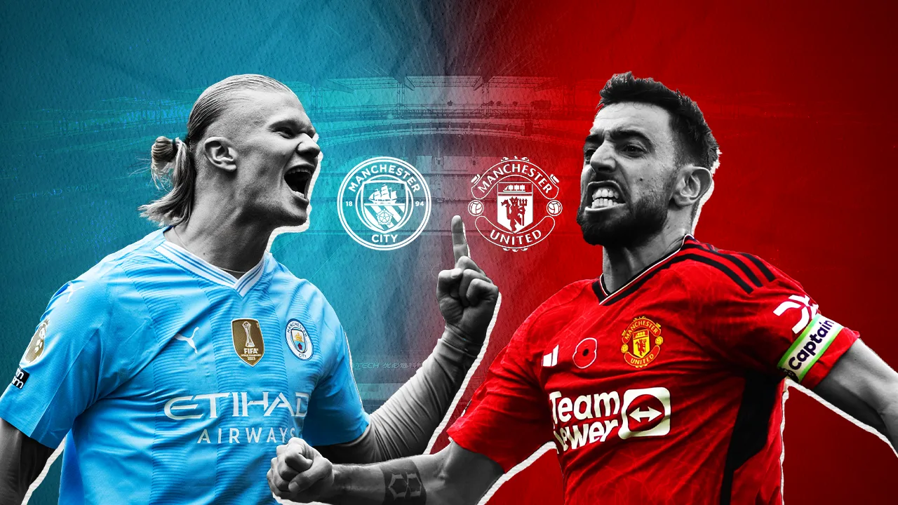

<article class="story-card compact main-headline-featured" style="margin-bottom: 40px; box-shadow: 0 12px 40px rgba(0,0,0,0.15); border-radius: 24px; overflow: hidden; transition: all 0.4s cubic-bezier(0.4,0,0.2,1);">
    <a href="articles/crystal-palace-unbeaten-streak-ends-grealish-everton-2025-10-05.html" class="story-link">
        <div class="story-image-wrapper" style="height: 480px; position: relative; overflow: hidden; border-radius: 24px 24px 0 0;">
            
            <div class="story-overlay" style="background: linear-gradient(to bottom, rgba(0,0,0,0) 0%, rgba(0,0,0,0.4) 60%, rgba(0,0,0,0.9) 100%); position: absolute; inset: 0;">
                <span class="story-category" style="position: absolute; top: 24px; left: 24px; font-size: 12px; font-weight: 700; letter-spacing: 1.2px; padding: 10px 18px; background: linear-gradient(135deg, #ff3366 0%, #ff6633 100%); color: #fff; border-radius: 24px; text-transform: uppercase; box-shadow: 0 4px 12px rgba(255,51,102,0.4);">🔴 BREAKING NEWS</span>
            </div>
        </div>
        <div class="story-content-wrapper" style="padding: 40px; background: linear-gradient(to bottom, #ffffff 0%, #fafbfc 100%); border-radius: 0 0 24px 24px;">
            <h1 class="story-headline" style="font-size: 2.75rem; line-height: 1.15; margin-bottom: 24px; font-weight: 900; color: #0a0a0a; letter-spacing: -0.03em; font-family: -apple-system, BlinkMacSystemFont, 'Segoe UI', sans-serif;">
                Crystal Palace Unbeaten Streak Shattered: Grealish's 93rd-Minute Strike Seals Everton's Dramatic 2-1 Win
            </h1>
            <p class="story-summary" style="font-size: 1.2rem; line-height: 1.75; margin-bottom: 32px; color: #4a5568; font-weight: 400; max-width: 90%; letter-spacing: -0.01em;">
                Crystal Palace's remarkable 19-game unbeaten run crashes to an end as Jack Grealish's chaotic rebound in the 93rd minute hands Everton their first win at Hill-Dickinson Stadium. Oliver Glasner's Eagles drop to fifth after wastefulness proves costly.
            </p>
            <div class="story-footer" style="display: flex; justify-content: space-between; align-items: center; padding-top: 24px; border-top: 1px solid rgba(0,0,0,0.08);">
                <div style="display: flex; align-items: center; gap: 20px;">
                    <span class="story-date" style="font-size: 0.9rem; color: #718096; font-weight: 500;">October 5, 2025</span>
                    <span class="featured-badge" style="background: linear-gradient(135deg, #37003c 0%, #4a0e4e 100%); color: #fff; padding: 6px 14px; border-radius: 20px; font-weight: 700; font-size: 0.75rem; letter-spacing: 0.5px; text-transform: uppercase; box-shadow: 0 2px 8px rgba(55,0,60,0.3);">PREMIER LEAGUE</span>
                </div>
                <span class="read-more" style="font-weight: 700; color: #ff3366; font-size: 0.95rem; display: flex; align-items: center; gap: 6px; transition: gap 0.3s ease;">Read Full Story <svg width="16" height="16" viewBox="0 0 24 24" fill="none" stroke="currentColor" stroke-width="2.5" stroke-linecap="round" stroke-linejoin="round"><line x1="5" y1="12" x2="19" y2="12"></line><polyline points="12 5 19 12 12 19"></polyline></svg></span>
            </div>
        </div>
    </a>
</article>
